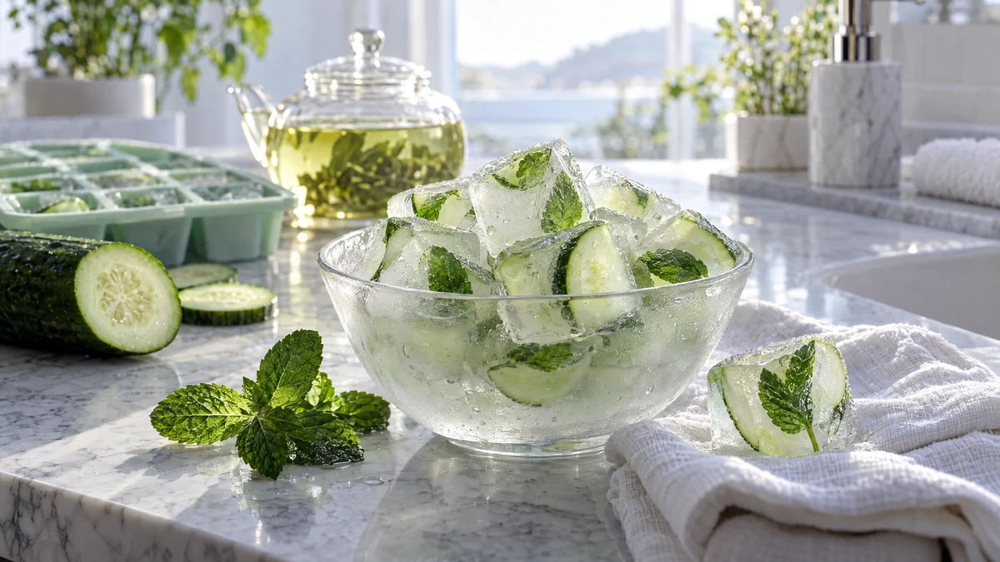

RESTFEST · HEMMASPA
Kylande ansiktsisbitar med gurka, mynta och grönt te
En bit gurka, några myntablad och en kopp grönt te frysas till små, ljusgröna isbitar med blad och gurka infrusna som i glas. En isbit inlindad i en tunn tvättlapp glider över ansiktet på morgonen och får huden att kännas pigg och sval. Sociala mediers favoritknep, gjort i en vanlig isbitsform.
- Förberedelse
- 10 min + 4 tim i frysen
- Verkningstid
- 1–2 min
- Räcker till
- ca 12 isbitar
- Nivå
- Nybörjare
Bra att veta. Gör ett lapptest innan du provar något nytt: stryk lite på insidan av underarmen och vänta ett dygn.
 Det här behöver du
Det här behöver du
Tryck på + vid det du behöver köpa.
Gör så här
- Låt tepåsen dra i det kokande vattnet i 3 minuter. Ta upp påsen och låt teet svalna helt.
- Skär 12 små, tunna gurkbitar. Mixa resten av gurkan slät med en stavmixer och pressa saften genom en sil. Du behöver ca 1 dl gurksaft.
- Blanda teet och gurksaften.
- Lägg ett myntablad och en gurkbit i varje fack i en isbitsform. Häll i vätskan och frys i minst 4 timmar.
- Tvätta ansiktet på morgonen.
- Lägg en isbit i tvättlappen och glid den lätt över ansiktet i små cirklar, från mitten och utåt: panna, kinder, käklinje och under ögonen. Håll den aldrig stilla på samma ställe.
- Efter 1–2 minuter, klappa huden torr och fortsätt med din vanliga ansiktskräm.
Presentation och användning
- Använd en isbitsform i silikon, så blir isbitarna jämna och lätta att ta loss.
- Lägg några isbitar i en kall glasskål med en tvättlapp bredvid, på en bricka i badrummet.
- Gör isbitarna i en större omgång och förvara dem i en fryspåse, där håller de i ca en månad.
- Perfekt efter ångbadet i behandling 77, eller en morgon när du har sovit för lite.
Bra att veta
- Låt aldrig isen ligga direkt mot huden, och håll den i rörelse. För lång kyla kan ge köldskador.
- Använd inte behandlingen om du har rosacea, köldallergi, eksem eller trasig hud.
- Håll isen en bit från ögonen och låt inget smältvatten rinna in i dem.
- Använd en ren tvättlapp varje gång.